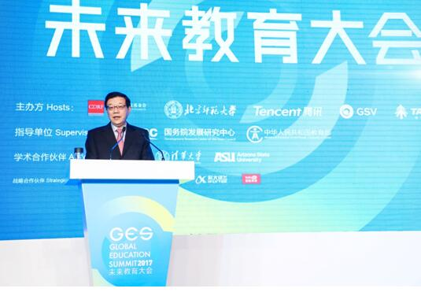
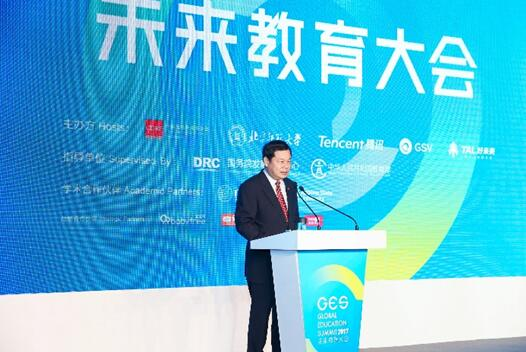

11月28日，首届GES未来教育大会（以下简称“GES大会”）在北京盛大开幕。本次大会由中国发展研究基金会携手北京师范大学、腾讯、GSV（全球硅谷投资公司）、好未来联合主办，经国务院发展研究中心、中华人民共和国教育部指导。同时，大会与清华大学、ASU（亚利桑那州立大学）建立了学术合作，携手宝宝树、VIPKID、科大讯飞和哒哒英语，借助先进的腾讯云直播技术，打造了一场立足中国、影响世界的全球未来教育盛会。
据悉，本次大会共邀请了全球范围内300多位教育行业重量级嘉宾，如国务院发展研究中心主任、中国发展研究基金会理事长李伟，中华人民共和国教育部副部长杜占元，北京师范大学校长董奇，好未来总裁白云峰等悉数到场。大会以“科技创新推动教育进步”为主题，以主题演讲、圆桌论坛、特别对话等形式，围绕科技推动教育进步、未来学习方式的变革、人工智能与个性化学习、全球化的国际教育、儿童早期发展、科技推动教育均衡化发展等议题，从多维度探讨了教育行业未来的发展趋势，GES大会或将成为连接现在与未来教育、连接中国与世界教育的新起点。
国务院发展研究中心主任、中国发展研究基金会理事长李伟
未来教育新趋势：“科技+教育”
无论国内外，教育都是一个正在蓬勃发展的行业。据欧洲教育科技组织Edtech Europe去年发布的《教育科技趋势报告》中显示，目前全球教育开支超过5万亿美元，教育支出预计以每年8%的速度增长，2020年将达到8.1万亿美元；而教育科技支出的增速更是远超行业平均水平，每年正在以17%的速度增长。在这次的GES未来教育大会上，许多国内外嘉宾共同表示，科技正在赋予教育一个更美好的未来。
在本届GES大会中，国务院发展研究中心主任、中国发展研究基金会理事长李伟带来了对未来教育的展望。“习近平主席强调，教育是提高人民综合素质、促进人的全面发展的重要途径，是民族振兴、社会进步的重要基石，是对中华民族伟大复兴具有决定性意义的事业；必须把教育事业放在优先位置，深化教育改革，加快教育现代化，办好人民满意的教育。”李伟表示，技术给人类发展带来的机遇一定大于挑战。
“我受陈宝生部长的委托，代表教育部对这次大会的召开表示热烈的祝贺。”教育部副部长杜占元表示，科技是影响未来教育最重要的因素之一。特别是信息技术的发展，对教育发展具有革命性影响，对实现教育发展目标和推动教育变革具有巨大的作用。因此，中国政府大力推进教育信息化，发布了《教育信息化十年发展规划（2011年-2020年）》，提出了具有中国特色的“三通两平台”建设工程。经过几年努力，中国的教育信息化工作取得了突破性进展。
中华人民共和国教育部副部长杜占元
作为GES大会的主办方之一，好未来始终以前瞻性的眼光聚焦教育科技研究领域。在会议中，好未来总裁白云峰分享了好未来对未来教育的深远思考：“教育的变革一定要走在产业变革前面，技术进步是解决教育普惠问题的有效方式。”白云峰表示，好未来要用科技推动教育的进步，在政府的领导下、在学校、社会办学力量、第三方科技机构的共同参与下，携手迎接更好的未来。
教育兴邦，科技强国。伴随着教育总体发展水平的提高、教育公平的实现，中国正在从“教育大国”走向“教育强国”，成为推动全球教育科技进步的中坚力量。此次GES未来教育大会也将成为“中国教育的一张名片”，是中国教育在世界的有力回声。
 陕西省教育大数据建设专题培训会召开
陕西省教育大数据建设专题培训会召开
 高校大数据应用研讨会在京召开
高校大数据应用研讨会在京召开
 【教育大数据】解读5年教育新变化
【教育大数据】解读5年教育新变化
 Round table on the subject “The use of Big Data in education”（ Turan University）
Round table on the subject “The use of Big Data in education”（ Turan University）